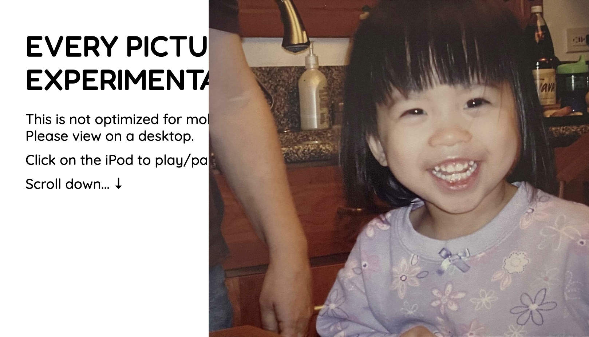

Conceptual Changes
There are no conceptual changes needed for my concept. The only thing I would want to update is the images that show once the user clicks on an iPod and the music starts playing.

There are no conceptual changes needed for my concept. The only thing I would want to update is the images that show once the user clicks on an iPod and the music starts playing.
I would like to fix how the main image appears on top of the text when the window is adjusted to appearing behind the text so it looks like it is hitting the border of the main area. This would most likely be with z-indez in the stylesheet. This would improve the design aspect as it allows the text to be shown instead of partially shown behind the image.
For interaction, I plan on implementing a usability aspect where once a user clicks on one of the iPods it pauses the other songs that might be playing. This will help prevent overlap and highlights the main song that should be playing at the time.
I do not have any concerns about implementing these ideas. However, I will need to test the image aspect of my design on different window sizes to make sure it works when the window is being resized. Additionally, I will need to test to make sure the music aspect works too.